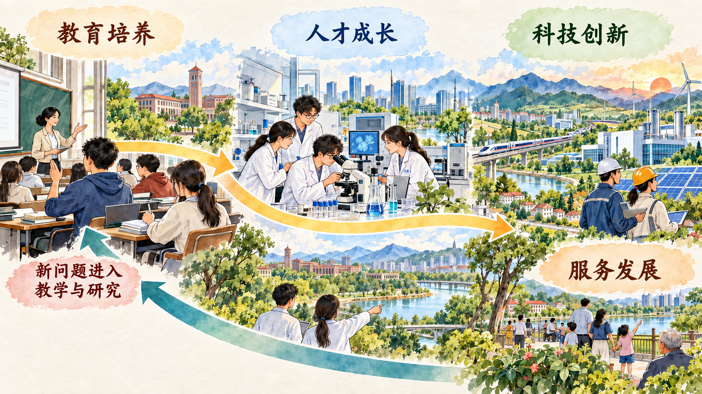

为什么教育、科技、人才必须一体推进
本节回答本章的总问题。教育、科技、人才各有功能，又共同作用于人的成长、知识创造和现代化建设。教育提供人才和知识基础，人才是创新活动的主体，科技创新又提出新的知识问题、职业能力和培养要求。把三者放入同一过程，才能理解“教育是根本、科技是关键、人才是基础”的内在联系。
一、坚持教育发展、科技创新、人才培养一体推进
教育、科技、人才是相互作用、相互促进的有机整体。经济社会可持续发展和人的全面发展，需要科技持续进步和创新；科技创新需要规模宏大、结构合理、素质优良的创新人才队伍；人才培养根本依靠教育。三者之间由此形成清晰的作用链条。
教育向学生传递已有知识，也帮助学习者提出问题、理解方法、形成价值判断，并在实践中发展创造能力。科技创新从实验室中的技术突破延伸到科研设施、组织协同、产业验证和社会应用，需要不同学科的人才共同参与。人才在教育、科研和实践中成长，又把新的问题、经验和方法带回教育与科研。

分析三者关系，可以使用“功能—连接—反馈”方法。首先判断教育、科技、人才分别承担什么功能；其次寻找知识、人才和现实需求怎样在三者之间流动；最后观察科技和发展提出的新问题怎样反馈到专业设置、课程内容和培养方式中。
案例研究｜DeepSeek 的年轻团队从哪里来
2025 年初，DeepSeek-R1 引起国内外广泛关注。公开技术报告介绍了模型在强化学习、推理能力和开放模型权重方面的探索。对大学生来说，更值得追问的问题是：参与前沿创新的人从哪里来，他们在实验和工程现场具体做了什么，高校又怎样把新技术重新转化为课程和人才培养资源？
新华社报道援引 DeepSeek 创始人梁文锋的介绍称，团队成员主要来自国内高校毕业生和在读博士生。许多成员刚离开校园不久。数学、计算机、软件工程和研究方法训练帮助他们理解论文、设计实验、编写程序和分析结果；企业中的真实任务则要求他们把个人知识放入算法、数据、算力和工程系统组成的协作链。
一个推理模型怎样经过多轮实验形成
DeepSeek-R1 技术报告记录了一条多阶段训练路线。第一步，团队先用少量经过整理的“冷启动”样本训练基础模型，使模型学会以较清楚的方式呈现推理过程。第二步，团队采用组相对策略优化方法开展强化学习：同一道数学或编程问题生成多组候选答案，系统依据答案正确性、格式和语言一致性给予奖励，再调整模型，使获得较高奖励的解题方式更容易出现。数学题可以核对最终答案，程序题可以用编译器和测试用例检查，这些可验证任务为大规模训练提供了明确反馈。
第三步，团队从强化学习后的模型中采样大量回答，对结果进行筛选，把质量较高的推理数据同写作、事实问答等通用数据结合，再进行监督微调。第四步，模型继续接受覆盖推理、帮助性和安全性的强化学习。研究人员需要比较不同训练阶段的模型表现，检查数学、代码、知识和语言任务中的变化，再根据评测结果调整数据与训练方案。实验由此形成“提出假设—构造任务—训练模型—评测结果—筛选数据—继续训练”的循环。
大规模计算任务怎样保持稳定运行
DeepSeek-V3 是支撑 R1 训练的基础模型。技术报告显示，它采用混合专家架构，总参数为 6710 亿，每个词元激活约 370 亿参数。系统根据输入选择一部分专家参与计算，使计算资源集中于当前任务。团队还采用 FP8 混合精度训练、无辅助损失的负载均衡策略和多词元预测目标，并通过算法、训练框架和硬件协同减少跨节点通信等待。
大模型训练需要许多计算节点同时工作。某些处理器计算得快、某些通信链路拥堵，都会造成设备等待和任务不稳定。DeepSeek-V3 报告介绍的 DualPipe 调度把前向计算、反向计算和通信交错安排，使数据传输与计算尽量重叠；专家并行通信方案则减少跨节点数据交换形成的瓶颈。报告记录，模型在 14.8 万亿词元上完成预训练，完整训练使用约 278.8 万 H800 GPU 小时，过程中没有出现需要回滚的不可恢复损失尖峰。这一结果来自模型结构、数值精度、通信调度、故障监测和工程实现的共同作用。
高校怎样把模型变成教学与科研平台
模型开放以后，多所高校把通用模型接入本校算力、课程资源和知识库，形成不同的使用路径。
| 高校与平台 | 具体建设 | 进入教学科研的方式 |
|---|---|---|
| 浙江大学“浙大先生” | 本地化部署 DeepSeek-V3、R1，接入“西湖之光”算力和 CARSI 资源共享平台，面向 829 所联盟高校开放 | 设置 AI 科学家、教务问答、智慧学伴等智能体，支持个性化学习路径、课堂讨论、随堂测验和师生自主开发智能体 |
| 东南大学校内 DeepSeek-R1 服务 | 在全国产云智算一体化平台部署 671B 模型，使用校内 85P 算力，提供校园身份认证、7×24 小时服务和本地数据存储 | 建设 105 门“AI+教学”试点课程；大学物理等课程把论文、教材和课程资料整理为专业知识库，由课程专属 AI 助教提供分步骤答疑 |
| 北京师范大学教学平台 | 将 DeepSeek 接入教学系统和“京师在线”，结合 BNU 教学大纲、雨课堂与个人知识库 | 教师用于备课、课堂问答和作业反馈；国际中文教育课程尝试生成课堂游戏、词语动画卡片和教材配套素材 |
| 中山大学 YatCC-AI | 依托国家超级计算广州中心“天河—星逸”算力、星光平台和 DeepSeek-R1，建设在线编译实践环境 | 进入“编译原理”“编译器构造实验”，提供专业问答、LLVM 代码开发与调优、前沿编译方案探索和分级测试反馈；平台由本、硕、博学生共同参与开发 |
中山大学的实践尤其能够帮助本校学生理解教育、科技、人才的连接。学生一方面在平台上学习编译原理，另一方面参与架构设计、代码开发、技术测试、文档和视频制作。课程知识进入真实平台，超算和大模型成为教学条件，学生团队又在建设平台的过程中形成系统能力。
这一案例把教育、科技、人才的循环具体化。高校提供基础知识、研究方法和实践平台，青年人才在高难度任务中组织实验和工程协作，技术成果又进入高校课程、科研平台和知识库。教育培养人才、人才推动创新、创新反哺教育，由此成为可以观察的现实过程。
讨论题
- 如果一名大学生希望五年后参与人工智能前沿创新，今天最值得积累的是工具使用熟练度，还是基础知识、问题意识和研究能力？请说明组合方案。
- 一个模型开源以后，为什么后续创新仍然需要人才、算力和工程组织？
- 从 DeepSeek 团队的成长过程看，高校教育与企业创新之间还可以建立哪些连接？
资料来源：DeepSeek-AI, “DeepSeek-R1: Incentivizing Reasoning Capability in LLMs via Reinforcement Learning,” 2025；DeepSeek-AI, “DeepSeek-V3 Technical Report,” 2024；新华网《DeepSeek 的成功是审视中国创新的生动样本》，2025 年 2 月 10 日；浙江大学培训中心《免费使用！浙大满血版 DeepSeek 上线！全国 829 所高校开放共享》，2025 年 2 月 19 日；东南大学《满血版 DeepSeek-R1 本地服务上线》，2025 年 2 月 17 日；北京师范大学国际中文教育学院《AI 赋能中文教学初体验》，2025 年 3 月 10 日；中山大学计算机学院《YatCC-AI：超算+DeepSeek，中山大学开启“智能编译”实践教学》，2025 年 2 月 25 日。
二、深入实施科教兴国战略、人才强国战略、创新驱动发展战略
科教兴国战略强调把科技和教育摆在经济社会发展的重要位置，人才强国战略强调建设规模宏大、结构合理、素质优良的人才队伍，创新驱动发展战略强调把创新作为引领发展的第一动力。三项战略分别突出教育科技基础、人才主体和创新动力，在现代化建设中相互支撑。
三项战略的联动，要求把资源投入转化为持续能力。建设学校、实验室和科研平台提供必要条件；课程改革、科研组织、评价制度和成果转化机制决定这些条件怎样发挥作用；人才在真实问题中形成能力，又把科技成果转化为产业发展、公共服务和国家安全能力。
参考资料｜从“向科学进军”到三大战略联动
新中国成立后，我国在工业基础和科技人才十分薄弱的条件下推进科学技术事业。1956 年，党中央发出“向科学进军”的号召，组织制定科学技术发展远景规划，集中力量建设现代科学技术基础。
改革开放以后，科技、教育同经济建设的联系进一步加强。1995 年，党中央、国务院作出加速科学技术进步的决定，提出实施科教兴国战略。战略的着眼点在于把经济建设转到依靠科技进步和提高劳动者素质的轨道上来，教育和科技由此更加直接地进入国家发展全局。
进入新世纪，人才强国战略把人才资源提升到国家战略资源的位置，强调培养、吸引和用好人才。创新驱动发展战略进一步回答发展动力问题，推动科技创新同经济社会发展深度结合。三项战略分别抓住知识基础、创新主体和发展动力，逐步形成相互衔接的战略布局。
| 历史阶段 | 面对的主要任务 | 教育、科技、人才关系的展开 |
|---|---|---|
| 新中国成立初期 | 建立工业化所需的科学技术和专业人才基础 | 建设科研机构和高等学校，制定科技规划，集中培养急需人才 |
| 改革开放新时期 | 使科学技术和教育更直接地服务经济建设 | 实施科教兴国战略，把科技进步、劳动者素质与发展方式联系起来 |
| 进入新世纪 | 应对知识经济和国际人才竞争 | 深入实施人才强国战略，完善人才培养、引进、使用和激励机制 |
| 新时代 | 转换发展动能，增强自主创新能力 | 深入实施创新驱动发展战略，一体推进教育发展、科技创新、人才培养 |
新时代把教育、科技、人才放在全面建设社会主义现代化国家的基础性、战略性支撑位置，强调教育优先发展、科技自立自强、人才引领驱动。战略协同需要进入具体制度：学科专业要回应科技和产业变化，重大科研任务要培养和使用青年人才，科研平台要向教学开放，人才评价要识别原创研究、工程实践和技能贡献，科技成果还要进入产业、公共服务和国家安全领域。
其认识进路可以概括为三个层次：建立现代科技教育基础，为工业化和国家建设准备条件；推动科技、教育与经济建设结合，提高发展能力；统筹教育、科技、人才，形成面向中国式现代化的战略合力。历史任务不断拓展，教育培养人、人才创造知识、科技服务发展的基本联系也更加清晰。
资料来源：中国政府网《科教兴国战略》；习近平《高举中国特色社会主义伟大旗帜 为全面建设社会主义现代化国家而团结奋斗》，2022 年 10 月 16 日。
三、坚持教育优先发展、科技自立自强、人才引领驱动
教育优先发展，要求在经济社会发展规划、财政投入、资源配置和公共服务中保障教育的基础地位。教育具有周期长、影响深的特点，今天的人才培养质量会影响未来的创新能力和社会发展。
科技自立自强，强调把国家和民族发展放在自己力量的基点上，提高自主创新能力。自立自强建立在开放合作基础上，体现的是自主提出问题、组织攻关、掌握关键能力并参与全球科技合作的能力。
人才引领驱动，要求把人才资源开发放在优先位置，尊重人才成长规律，为各类人才提供学习、实践、创新和贡献的机会。三项要求在运行中相互贯通：教育优先提供人才基础，人才引领激活创新主体，科技自立自强把知识和人才转化为国家发展能力。